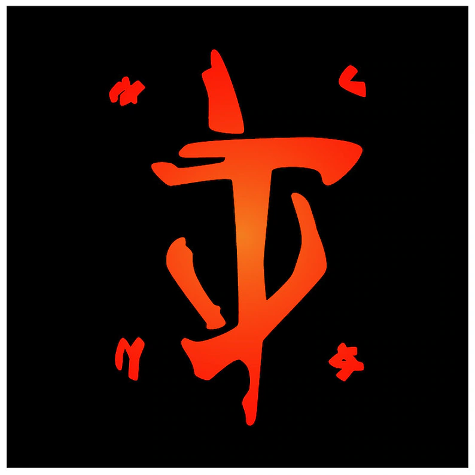
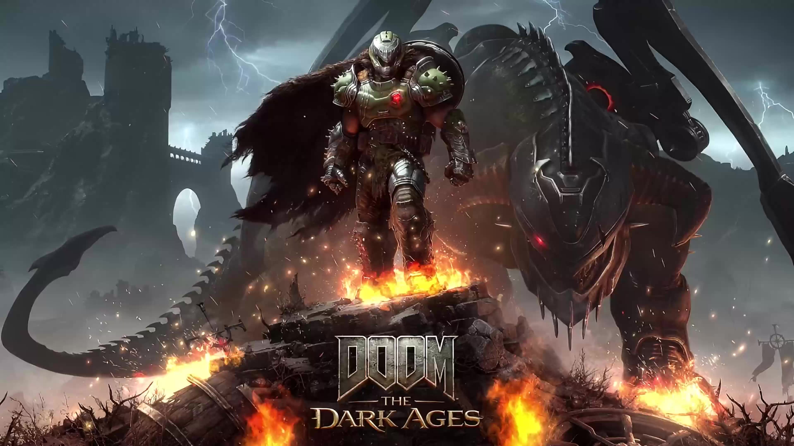
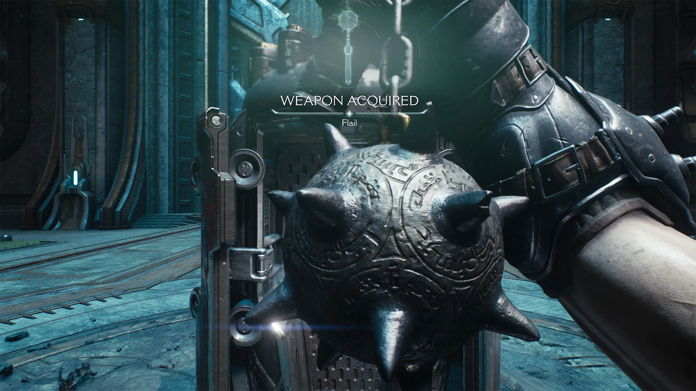
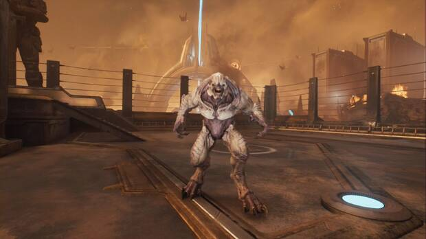

El Slayer
El arma viviente suprema. Equipado con una armadura de la era oscura para aplastar la invasión demoníaca.
Ver expediente
DOOM: THE DARK AGESDescubre los orígenes oscuros y medievales del Slayer. Una guerra encarnizada contra las legiones infernales en una era sin piedad.
Explorar Lore
El arma viviente suprema. Equipado con una armadura de la era oscura para aplastar la invasión demoníaca.
Ver expediente
Arma defensiva y ofensiva letal. Permite parar ataques pesados y ser arrojada para rebanar enemigos.
Ver especificaciones.webp)
Titánica máquina de combate construida para entablar combate cuerpo a cuerpo contra las bestias gigantes del infierno.
Pilotar unidad
Bestia alada modificada con reactores de plasma que otorga supremacía aérea en la batalla.
Ver bestiario
Arma de impacto masivo capaz de destrozar grupos cerrados de demonios a media distancia.
Ver armamento
Furia demoníaca ancestral. Una bestia de pura fuerza bruta entrenada para dar caza al Slayer.
Ver amenaza